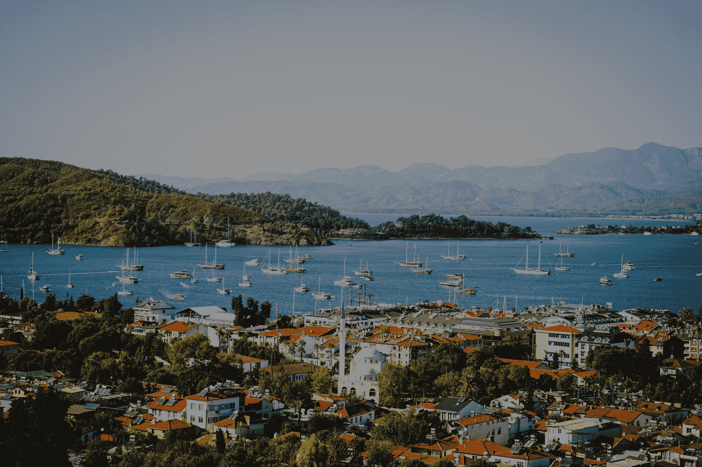
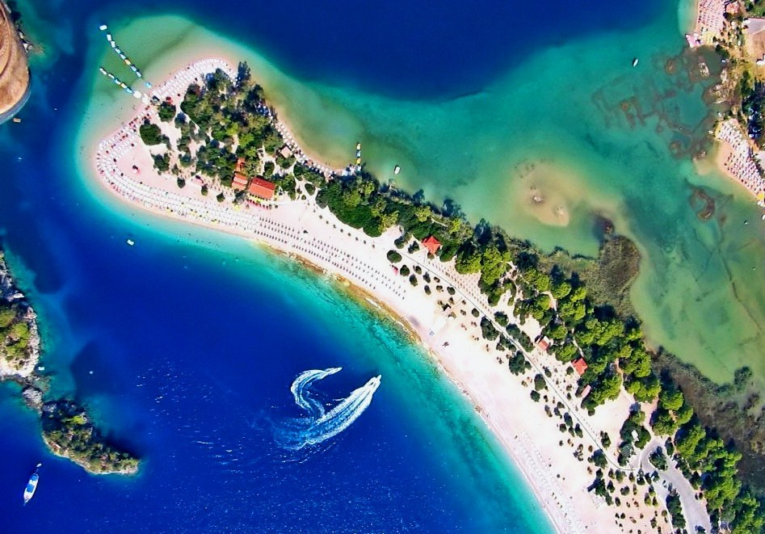
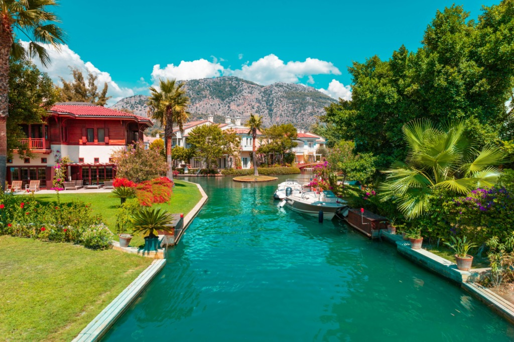
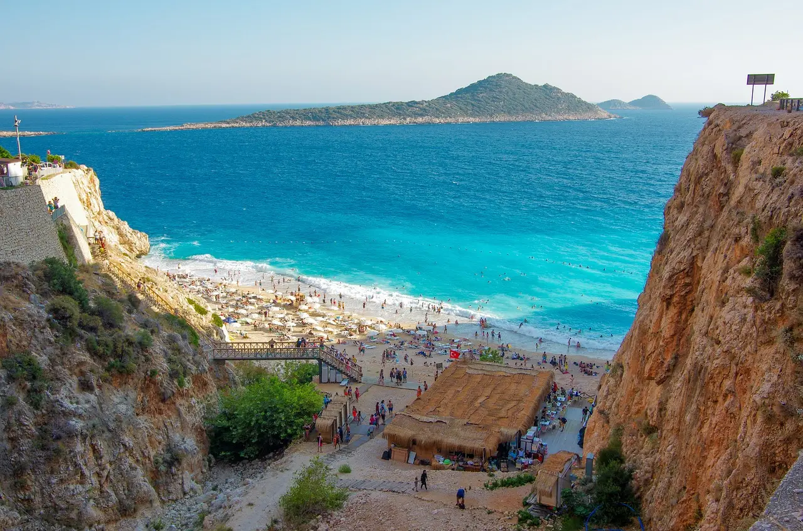
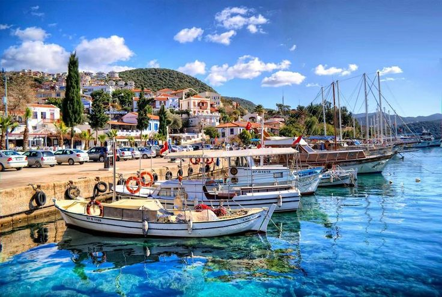
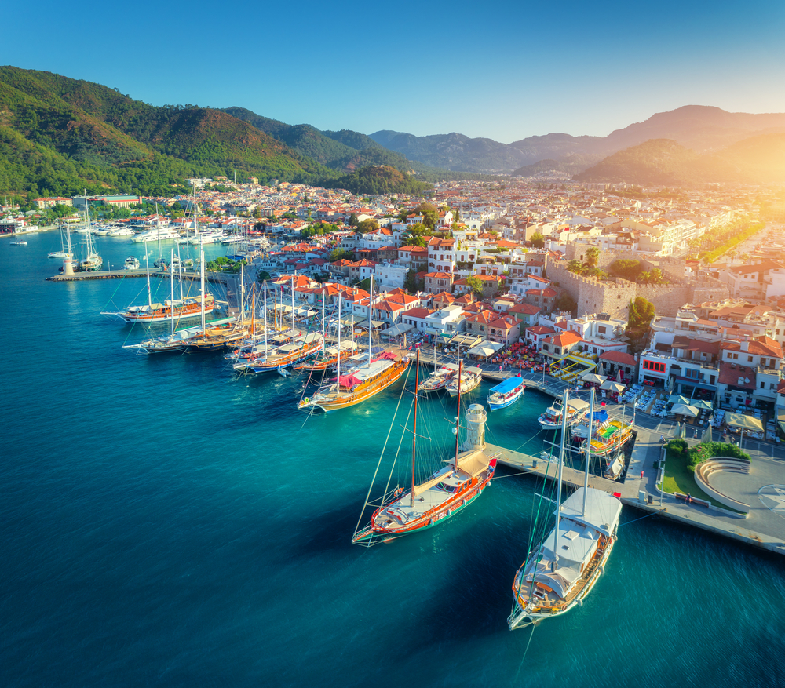

Licensed Travel Agency
Airport transfer services are provided through a licensed Turkish travel agency structure.
Looking for a reliable Dalaman Airport transfer service? GoToFethiye provides private airport transfers from Dalaman Airport to Fethiye, Ölüdeniz, Göcek, Kalkan, Kaş, Marmaris and surrounding holiday destinations.
GoToFethiye operates through a licensed Turkish travel agency and provides private airport transfers for international visitors arriving at Dalaman Airport.
Airport transfer services are provided through a licensed Turkish travel agency structure.
No shared shuttle services. Your vehicle is reserved only for you and your group.
Contact us before arrival, during your journey and after your booking.
Travel from Dalaman Airport to your hotel, villa, apartment or marina with a comfortable private transfer service.
No shared shuttle and no waiting for other passengers. Your vehicle is reserved only for your group.
Send your destination and passenger number. We confirm your Dalaman Airport transfer price before booking.
If your flight is delayed, your pickup time can be adjusted according to the actual arrival time.
Choose your destination and contact us for a private transfer price from Dalaman Airport.

Dalaman Airport to Fethiye TransferPrivate transfer from Dalaman Airport to Fethiye hotels, villas and apartments.

Dalaman Airport to Ölüdeniz TransferComfortable airport transfer to Ölüdeniz, Hisarönü and Ovacık.

Dalaman Airport to Göcek TransferPrivate transfer to Göcek hotels, villas, marinas and yacht areas.

Dalaman Airport to Kalkan TransferLong-distance private transfer from Dalaman Airport to Kalkan.

Dalaman Airport to Kaş TransferReliable private airport transfer to Kaş and nearby holiday areas.

Dalaman Airport to Marmaris TransferPrivate transfer from Dalaman Airport to Marmaris hotels and resorts.
GoToFethiye helps visitors arrange private airport transfers from Dalaman Airport to popular destinations across the Fethiye region.
Our goal is simple: make airport arrivals easy, comfortable and stress-free.
We assist travellers arriving at Dalaman Airport and connect them with reliable private transfer services to Fethiye, Ölüdeniz, Göcek, Kaş, Kalkan and nearby holiday destinations.
Whether you are travelling as a couple, family or group, we aim to provide a smooth transfer experience from the moment you land until you arrive at your accommodation.
If you need a transfer quotation, simply send your travel details via WhatsApp and we will help you arrange your journey.
A simple, private and reliable airport transfer experience from Dalaman Airport to your holiday destination.
Get your transfer price before booking. No hidden fees or surprise costs.
Your vehicle is reserved only for your group. No shared shuttle service.
Pickup time can be adjusted if your flight arrives earlier or later.
Contact us easily before arrival, during your journey and after booking.
Transfers are arranged through a licensed Turkish travel agency structure.
Travel directly from Dalaman Airport to your hotel, villa, apartment or marina.
Our goal is to make airport arrival simple, safe and stress-free for international visitors.
Send your flight date, arrival time, destination and passenger number. We reply with availability and price.
Travel in clean, air-conditioned vehicles suitable for families, couples and small groups.
Your driver takes you directly from Dalaman Airport to your hotel, villa, apartment or marina.
A simple booking process without complicated online forms.
Send your arrival date, flight number, destination and number of passengers via WhatsApp.
We confirm your route, vehicle availability and private transfer price.
After confirmation, your Dalaman Airport pickup is scheduled.
Your driver meets you at the airport and takes you directly to your destination.
Common questions before booking a private airport transfer from Dalaman Airport.
The price depends on your destination, passenger number and vehicle type. Send your details via WhatsApp for a fixed quote.
All transfers are private. The vehicle is reserved only for your group.
Yes. We provide private transfers from Dalaman Airport to Fethiye, Ölüdeniz, Göcek, Kalkan, Kaş, Marmaris and nearby areas.
Flight arrival times are monitored and pickup time is adjusted when necessary.
Yes. You can book both arrival and return transfers at the same time.
Send your flight details and destination now. Get availability and fixed price information by WhatsApp.